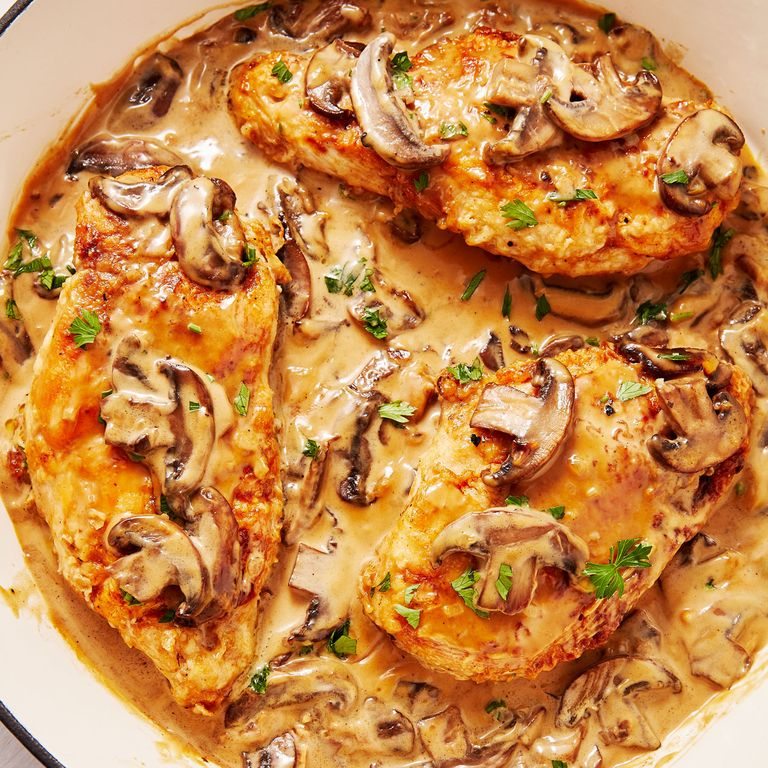

Delicious Chicken Marsala

Description
Chicken Marsala is a classic Italian American dish that's creamy, quick, and irresistible.
The creamy sauce made of mushrooms, marsala wine, and heavy cream is straight-up drinkable,
and we love serving it over a big pile of spaghetti or angel hair. The marsala wine makes it
slightly sweet and is what gives it that addictive quality. It's the perfect weeknight dinner ,
and we don't even feel guilty making it three nights in a row. It's a real plus that this dish
comes together in a flash.
Ingredients
- 1 c. All-purpose Flour
- Kosher Salt
- Freshly Ground Black Pepper
- 4 Boneless Skinless Chicken Breasts
- 2 Tbsp Butter
- 1 Tbst Olive Oil
- 8 Oz Baby Bell or Crimini Mushrooms, sliced
- 2 cloves garlic
- 3/4 Cup Marsala Wine
- 3/4 Cup Chicken Broth
- 1/2 cup Heavy Cream
- 2 Tbsp Freshly Chopped Parsley
- Cooked Angel Hair Pasta for serving
Directions
- In a shallow bowl, season flour with salt and pepper. Dredge chicken in flour.
- In a large skillet over medium heat, melt 1 tablespoon butter and oil. Add chicken and cook until golden
on both sides, about 5 minutes per side. Remove chicken from pan and place on a clean plate.
- Make marsala sauce: Melt remaining 1 tablespoon butter in skillet and add mushrooms. Cook until mushrooms are
golden and liquid has been released, 6 to 8 minutes (if the pan looks dry, add a splash of olive oil). Add
garlic and cook until fragrant, then season with salt.
- Add marsala, chicken broth, heavy cream, and parsley and bring to a simmer.
- Return chicken to skillet and spoon sauce over breasts. Simmer until chicken is cooked through, about 10 minutes.
- Serve over angel hair, if desired.